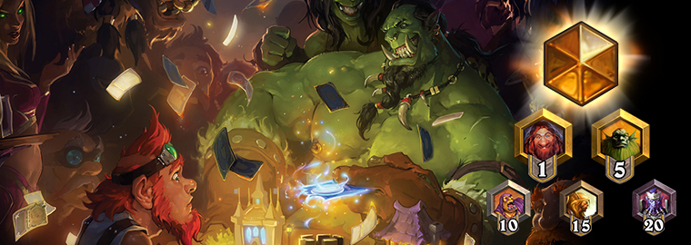
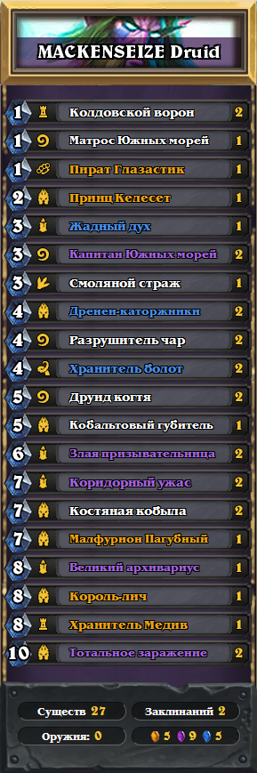
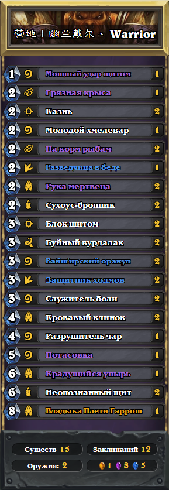
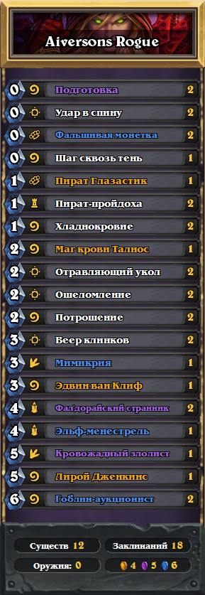

Колоды «Легенды»

В Hearthstone всегда интересно наблюдать, как игроки приспосабливаются к новым условиям по ходу соревновательных игр и развивают новые навыки. Поразительно, какие эффектные и изобретательные идеи вы находите в борьбе за рейтинг в условиях жесткой конкуренции!
Сегодня мы хотим представить вам несколько необычных колод, которые привели их создателей к рангу «Легенда». Мы собрали данные об игроках, которые на прошлой неделе добились особенно впечатляющих результатов, и выбрали самые интересные колоды среди тех, что использовались более чем в 50 играх на ранге «Легенда».
Первая — MACKENSEIZE с колодой «большого» друида. Отличная стратегия, новые карты и тщательно продуманные тактические решения: вот рецепт успеха в ее игре за друида. Один из лучших результатов в рейтинговых играх Северной Америки!

AAECAZICCtQFobcCkbwCysMCyssCws4CmdMCnOIC+eYC0OcCCqgFtAXyBb6uArazApvLAofOAqbOAvvTAtfrAgA=
Владелец второй колоды— игрок 营地丨幽兰戴尔丶. Эта колода воина достигла впечатляющего показателя побед— 64%, став одной из самых успешных в рейтинговых играх Китая.

AAECAQcIS58DogTyBb7DAt/EAqDOAp/TAguRBvgH/wf7DIKtApvCAsbDAszNAo7OAs/lAs/nAgA=
И наконец, хорошо забытое старое: «Миракл»-разбойник! Колоду составил Aiversons и быстро достиг ранга «Легенда» с выдающимся показателем побед в Европе — 74%.

AAECAaIHCLIC7QKvBO0FkbwC/MECgcIC2+MCC7QBjALNA70EmwWIB6QHhgmStgL1uwLc0QIA
Неординарные решения помогли этим игрокам блеснуть мастерством и достичь впечатляющих результатов. Поздравляем и желаем удачи в дальнейшем!